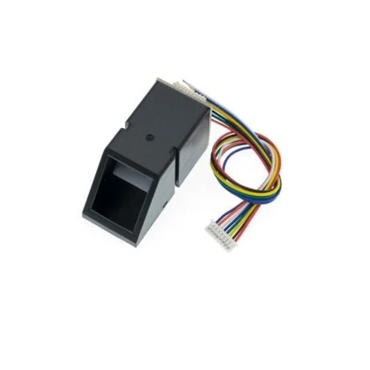
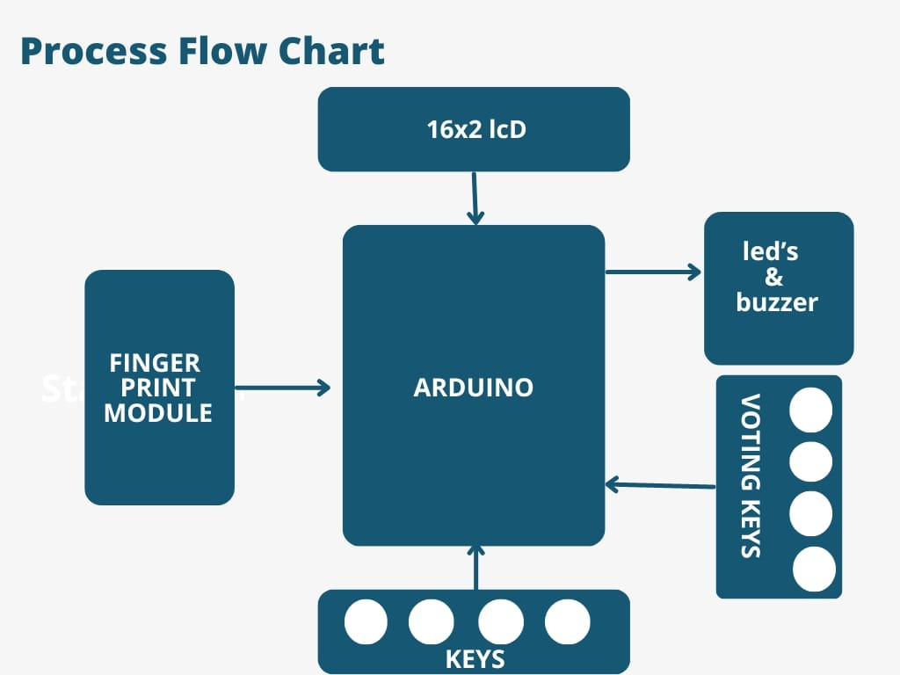

In the realm of modern elections, Electronic Voting Machines have become ubiquitous, streamlining the voting process by digitizing ballot registration. However, the paramount concern remains security, particularly in preventing instances of double voting and eliminating the potential for fraudulent practices. In response to this challenge, we present the FingerPrint Based Biometric Voting Machine using Arduino. This innovative system leverages biometric authentication through fingerprint recognition, providing a secure and tamper-resistant method to authorize voters. By linking each vote to a unique fingerprint, the technology ensures the integrity of the electoral process and effectively combats the threat of unauthorized or duplicate voting. Join us in exploring this cutting-edge application of Arduino technology to enhance the security and reliability of the voting experience.
The Finger Print Sensor Module, or Finger Print Scanner, serves as a crucial component in this system, tasked with capturing the unique fingerprint image. Following capture, the module undertakes the intricate process of transforming the fingerprint image into a corresponding template. This template is then meticulously preserved in the module's memory under a designated ID, a task overseen and directed by the Arduino. Every step of this intricate operation, from image acquisition to template conversion and storage location assignment, is orchestrated by the Arduino. In essence, the Arduino assumes command, ensuring the seamless execution of each facet of the fingerprint recognition and storage process.
In this FingerPrint Voting Machine Circuit, the authentication process is facilitated by the Finger Print Sensor Module, which captures and processes the user's fingerprint input. The circuit incorporates 5 push buttons, each serving a distinct purpose: Match, Enroll/Back, Delete/OK, UP, and Down. Notably, the Enroll and Delete keys possess dual functionality. The Enroll key functions both as the trigger for enrolling new fingerprints and as a back button. If a user decides not to proceed after pressing the Enroll key during the ID/location selection phase, pressing it again acts as a back button, allowing the user to navigate to the previous step. Similarly, the DEL/OK key also has a dual role. After selecting the ID or location using the UP and DOWN keys, pressing DEL/OK serves as confirmation (OK) to proceed with the chosen ID or location. Meanwhile, the Match key is pivotal for voters intending to cast their votes. Before voting, the user must authenticate themselves by placing their finger on the Finger Print Sensor. Successful authentication grants the user the privilege to vote. This design intricately weaves together these functions, ensuring a user-friendly and efficient experience in the fingerprint-based voting process. The Enroll and Delete keys offer flexibility, serving both primary functions seamlessly, while the Match key acts as the gateway to the voting process, ensuring the security and legitimacy of each vote cast.
Data-Sheet of R307 FingerPrint Module :The operational flow of the Biometric Voting System may initially seem intricate for beginners. To initiate the system, a user is required to enroll voters' fingerprints, with a set maximum limit of 25 voters in this particular code. The process begins with the user pressing the 'ENROLL' key, prompting the LCD to request the entry of a unique location or ID for storing the fingerprint data. Using the 'UP/DOWN' keys, the user selects the desired location and confirms the choice by pressing the 'OK' (DEL) key.
Subsequently, the LCD instructs the user to place their finger over the fingerprint module. Following this prompt, the user complies, allowing the system to capture an image of the fingerprint. The system then prompts the user to remove their finger from the module, followed by another request to place the finger once more. This iterative process ensures the system captures multiple perspectives of the fingerprint, enhancing accuracy. The fingerprint module processes the collected images, converting them into templates that are then stored in the module's memory under the selected ID. With this, the voter is successfully registered, gaining the authorization to cast their vote. This systematic approach ensures the enrollment of all voters, securing the integrity of the Biometric Voting System. Now if the user wants to remove or delete any of stored ID then he/she need to press DEL key, after pressing DEL key, LCD will ask for select location means select ID that to be deleted. Now user needs to select ID and press OK key (same DEL key). Now LCD will let you know that finger has been deleted successfully.
When a user desires to cast their vote, the initiation begins with the pressing of the Match key. Subsequently, a buzzer emits a distinctive beep, accompanied by the illumination of an LED, signaling the start of the authentication process. Simultaneously, the LCD prompts the user to position their finger over the fingerprint module. The Arduino extends three attempts for the user to place their finger successfully. Upon fingerprint placement, the module captures the fingerprint image, initiating the search for a matching ID within the system. If the system identifies a matching fingerprint ID, the LCD promptly displays 'Authorized Voter,' signifying the user's eligibility to cast their vote. At this juncture, the system transitions to the voting stage, indicated by the activation of a Green LED. The voter can now make their candidate selections by pressing the corresponding keys on the RED breadboard. In the event that a previously authorized voter attempts to cast another vote, the system intelligently recognizes this and displays 'Already Voted' on the LCD. Simultaneously, a buzzer emits a 5-second beep, emphasizing the system's prohibition against multiple votes from the same individual. Additionally, if a non-registered user attempts to vote, the fingerprint module fails to detect their ID, prompting the LCD to display 'No Fingerprint Found.' This stringent authentication process ensures the integrity of the voting system by preventing unauthorized or duplicate votes.
#include
#include
LiquidCrystal lcd(13,12,11,10,9,8);
#include
uint8_t id;
Adafruit_Fingerprint finger = Adafruit_Fingerprint(&Serial);
#define enroll 14
#define del 15
#define up 16
#define down 17
#define match 18
#define indVote 6
#define sw1 5
#define sw2 4
#define sw3 3
#define resultsw 2
#define indFinger 7
#define buzzer 19
#define records 25
int vote1,vote2,vote3;
int flag;
void setup()
{
delay(1000);
pinMode(enroll, INPUT_PULLUP);
pinMode(up, INPUT_PULLUP);
pinMode(down, INPUT_PULLUP);
pinMode(del, INPUT_PULLUP);
pinMode(match, INPUT_PULLUP);
pinMode(sw1, INPUT_PULLUP);
pinMode(sw2, INPUT_PULLUP);
pinMode(sw3, INPUT_PULLUP);
pinMode(resultsw, INPUT_PULLUP);
pinMode(buzzer, OUTPUT);
pinMode(indVote, OUTPUT);
pinMode(indFinger, OUTPUT);
lcd.begin(16,2);
if(digitalRead(resultsw) ==0)
{
for(int i=0;i=0)
{
flag=0;
for(int i=0;i25)
count=0;
delay(500);
}
else if(digitalRead(down) == 0)
{
count--;
if(count<0)
count=25;
delay(500);
}
else if(digitalRead(del) == 0)
{
id=count;
getFingerprintEnroll();
for(int i=0;i25)
count=0;
delay(500);
}
else if(digitalRead(down) == 0)
{
count--;
if(count<0)
count=25;
delay(500);
}
else if(digitalRead(del) == 0)
{
id=count;
deleteFingerprint(id);
for(int i=0;i vote2 && vote1 > vote3))
{
lcd.clear();
lcd.print("Can1 Wins");
delay(2000);
lcd.clear();
}
else if(vote2 > vote1 && vote2 > vote3)
{
lcd.clear();
lcd.print("Can2 Wins");
delay(2000);
lcd.clear();
}
else if((vote3 > vote1 && vote3 > vote2))
{
lcd.clear();
lcd.print("Can3 Wins");
delay(2000);
lcd.clear();
}
else
{
lcd.clear();
lcd.print(" Tie Up Or ");
lcd.setCursor(0,1);
lcd.print(" No Result ");
delay(1000);
lcd.clear();
}
}
else
{
lcd.clear();
lcd.print("No Voting....");
delay(1000);
lcd.clear();
}
vote1=0;vote2=0;vote3=0;vote=0;
lcd.clear();
return;
}
}
digitalWrite(indVote, LOW);
}
void voteSubmit(int cn)
{
lcd.clear();
if(cn == 1)
lcd.print("Can1");
else if(cn == 2)
lcd.print("Can2");
else if(cn == 3)
lcd.print("Can3");
lcd.setCursor(0,1);
lcd.print("Vote Submitted");
digitalWrite(buzzer , HIGH);
delay(1000);
digitalWrite(buzzer, LOW);
digitalWrite(indVote, LOW);
return;
}